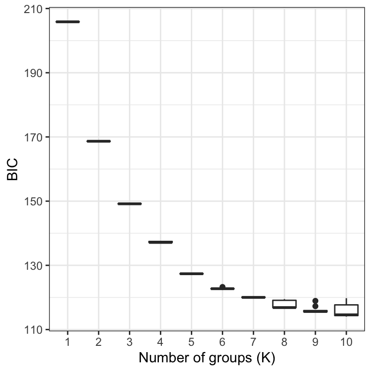
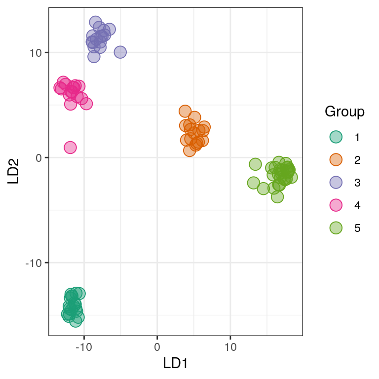
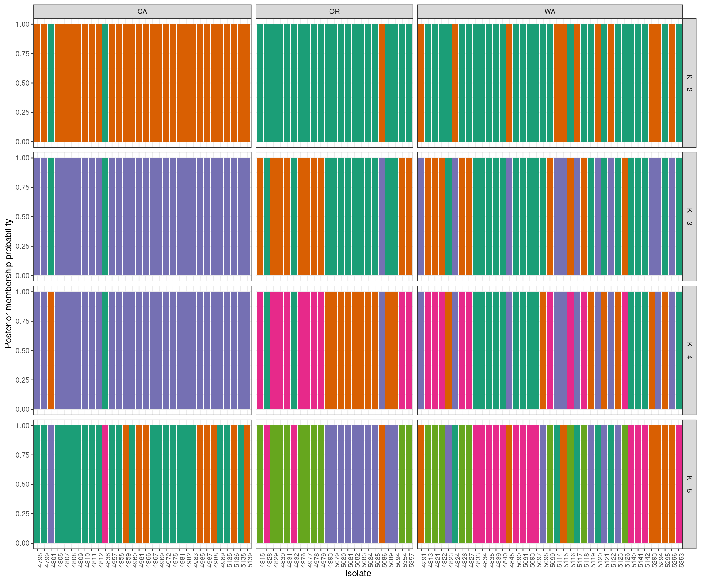
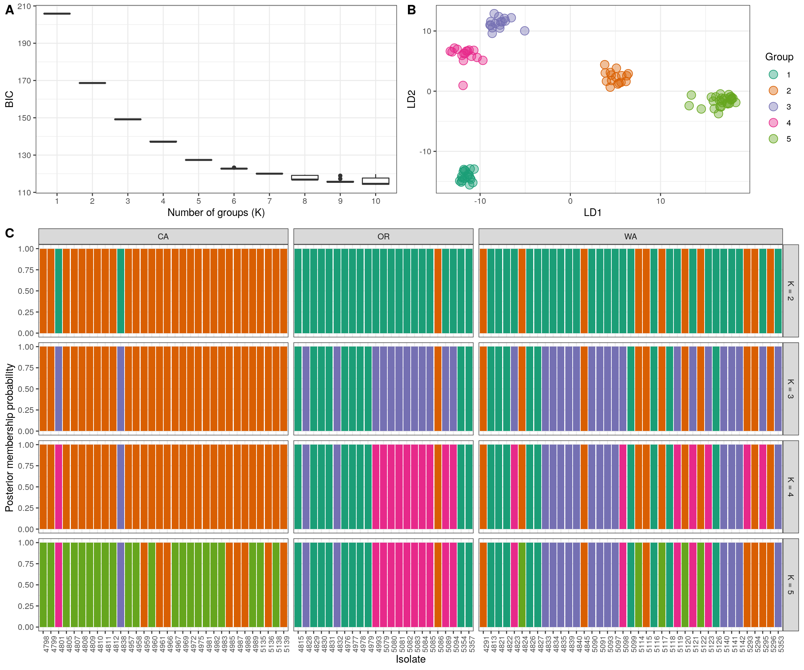

A frequent research question is “how many groups are in my data” and “which individuals belong to which groups?” Clustering algorithms attempt to address this. These algorithms include software outside ot the R environment such as Struccture (but see strataG), fastStructure, and admixture. Within the R environment, we’ve frequently used discriminant analysis of principle components (DAPC). We’ve discussed how to implement this analysis here. There are results from several steps during this analysis. Here we a present a way to present this information in a single graphic.
We’ll start by performing K-means clustering over a number of values of K and repeat 10 times fo each value so we can explore variability for these values.
pop.data <- read.table("population_data.gbs.txt", sep = "\t", header = TRUE)
all(colnames(vcf@gt)[-1] == pop.data$AccessID)## [1] TRUE
gl_rubi <- vcfR2genlight(vcf)
library(adegenet)
maxK <- 10
myMat <- matrix(nrow=10, ncol=maxK)
colnames(myMat) <- 1:ncol(myMat)
for(i in 1:nrow(myMat)){
grp <- find.clusters(gl_rubi, n.pca = 40, choose.n.clust = FALSE, max.n.clust = maxK)
myMat[i,] <- grp$Kstat
}If you peak at the bottom of this document you’ll see that our goal is a multi-panel ggplot. Each panel will be a different ggplot object, so we’ll have to give them unique names as we make them.
library(ggplot2)
library(reshape2)
my_df <- melt(myMat)
colnames(my_df)[1:3] <- c("Group", "K", "BIC")
my_df$K <- as.factor(my_df$K)
head(my_df)## Group K BIC
## 1 1 1 205.8632
## 2 2 1 205.8632
## 3 3 1 205.8632
## 4 4 1 205.8632
## 5 5 1 205.8632
## 6 6 1 205.8632
p1 <- ggplot(my_df, aes(x = K, y = BIC))
p1 <- p1 + geom_boxplot()
p1 <- p1 + theme_bw()
p1 <- p1 + xlab("Number of groups (K)")
p1
If everything looks okay, we can proceed to the DAPC.
In general, it is recommended to explore several values of K. The find.clusters() function includes some stochasticity. When we’re at the figure creation step we’ll need consistency, so we’ll set a seed. If you’re at an earlier stage in your analysis you should comment the set.seed() call out to explore how sensitive your results are to the seed.
my_k <- 2:5
grp_l <- vector(mode = "list", length = length(my_k))
dapc_l <- vector(mode = "list", length = length(my_k))
for(i in 1:length(dapc_l)){
set.seed(9)
grp_l[[i]] <- find.clusters(gl_rubi, n.pca = 40, n.clust = my_k[i])
dapc_l[[i]] <- dapc(gl_rubi, pop = grp_l[[i]]$grp, n.pca = 40, n.da = my_k[i])
# dapc_l[[i]] <- dapc(gl_rubi, pop = grp_l[[i]]$grp, n.pca = 3, n.da = 2)
}A nice perspective is to create a scatterplot based on the discriminant functions. This helps us see how diffferent the resulting clusters are and if we may have chosen too high of a value for K.
my_df <- as.data.frame(dapc_l[[ length(dapc_l) ]]$ind.coord)
my_df$Group <- dapc_l[[ length(dapc_l) ]]$grp
head(my_df)## LD1 LD2 LD3 LD4 Group
## 4291 -4.574427 -1.780521 3.3024701 -5.2173933 2
## 4798 -16.425573 3.741697 0.3999325 2.0302884 1
## 4799 -16.701390 2.619056 0.3338921 0.7285504 1
## 4801 11.518857 -6.655966 6.4625807 1.7802317 3
## 4805 -16.824606 1.899893 -1.2876082 2.2705894 1
## 4807 -17.872223 1.326320 -0.2807727 2.8392795 1
my_pal <- RColorBrewer::brewer.pal(n=8, name = "Dark2")
p2 <- ggplot(my_df, aes(x = LD1, y = LD2, color = Group, fill = Group))
p2 <- p2 + geom_point(size = 4, shape = 21)
p2 <- p2 + theme_bw()
p2 <- p2 + scale_color_manual(values=c(my_pal))
p2 <- p2 + scale_fill_manual(values=c(paste(my_pal, "66", sep = "")))
p2
Another popular perspective is to look at barplots of the posterior probabilities of group assignment for each sample. Here we’ll use “facets” to separate the different values of K. First we’ll need to combine our data into a single long form data.frame. We’ll also add our geographic information for additional faceting.
tmp <- as.data.frame(dapc_l[[1]]$posterior)
tmp$K <- my_k[1]
tmp$Isolate <- rownames(tmp)
tmp <- melt(tmp, id = c("Isolate", "K"))
names(tmp)[3:4] <- c("Group", "Posterior")
tmp$Region <- pop.data$State
my_df <- tmp
for(i in 2:length(dapc_l)){
tmp <- as.data.frame(dapc_l[[i]]$posterior)
tmp$K <- my_k[i]
tmp$Isolate <- rownames(tmp)
tmp <- melt(tmp, id = c("Isolate", "K"))
names(tmp)[3:4] <- c("Group", "Posterior")
tmp$Region <- pop.data$State
my_df <- rbind(my_df, tmp)
}And now build the ggplot.
grp.labs <- paste("K =", my_k)
names(grp.labs) <- my_k
p3 <- ggplot(my_df, aes(x = Isolate, y = Posterior, fill = Group))
p3 <- p3 + geom_bar(stat = "identity")
p3 <- p3 + facet_grid(K ~ Region, scales = "free_x", space = "free",
labeller = labeller(K = grp.labs))
p3 <- p3 + theme_bw()
p3 <- p3 + ylab("Posterior membership probability")
p3 <- p3 + theme(legend.position='none')
#p3 <- p3 + scale_color_brewer(palette="Dark2")
p3 <- p3 + scale_fill_manual(values=c(my_pal))
p3 <- p3 + theme(axis.text.x = element_text(angle = 90, hjust = 1, size = 8))
p3
The group names in the assignment test are arbitrary. This means that what is group 1 in the K = 2 facet may be very similar to group 4 in the K = 3 facet. For example, group 2 at K = 4 appears to be group 5 at K = 5. At the present I handle this with a manual step, which I’ve omitted here. If your goal is a “publication quality” graphic, you should invest some time in standardizing the group names. This is also why I added the seed above.
We can now put all of this together into one plot. We’ll use the package ggpubr which I learned to use at this STHDA blog.
# http://www.sthda.com/english/articles/24-ggpubr-publication-ready-plots/81-ggplot2-easy-way-to-mix-multiple-graphs-on-the-same-page/
library("ggpubr")
#tiff('dapc__k3_5_dapc.tiff', width=6.5, height=6.5, units='in', compression='lzw', res=300)
ggarrange(ggarrange(p1,
p2,
ncol = 2, labels = c("A", "B")),
p3,
nrow = 2,
labels = c("", "C"),
heights = c(1, 2)
)
Note that I’ve commented out two lines. These can be uncommented to create a publication quality graphic. But if I did that while building the website my graphic would be sent to the file instead of appearing in this website. So I’ve commented it out so its there when I need it.
We now have our justification for choosing any K value (A. K-means clustering), the relashionships among the groups at the highest K value we’ve explored (B. scatter plot of discriminant functions) and the probability of each individual being assigned to each group. Note that the data comes from clonal plant pathogens. Your data may look very different.